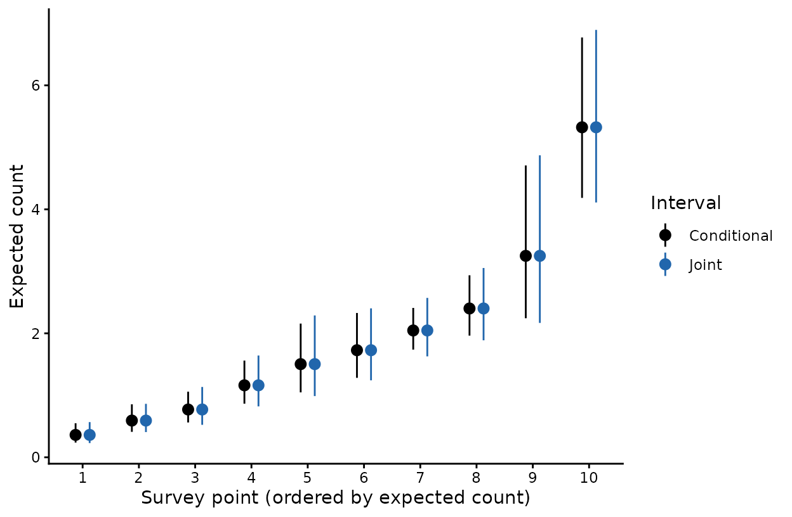

09. What Your Estimates and Intervals Mean
Bill Peterman
Source:vignettes/v09-estimates-and-intervals.Rmd
v09-estimates-and-intervals.RmdWhat this vignette covers
Every number multiScaleR reports answers a specific
question, and an interval helps only if you know which one. Consider
three statements about a single fitted model. The landscape effect
extends about 500 m. The expected count at a site is 3. An observer
could record anywhere from 0 to 9 animals there. Each statement has its
own interval, and the three are not interchangeable.
This vignette shows what each estimate and interval includes, what it leaves out, and how to choose the one your question needs. It works through three examples. The first fits a count model and compares two intervals for the same prediction. The second checks how well the data locate a single scale of effect. The third uses a stored Bayesian fit to separate an expected count from a count you might record.
Read vignette("v01-quickstart", package = "multiScaleR")
first. The Bayesian example reuses the fitted model from
vignette("v13-bayesian-scales", package = "multiScaleR"),
but you do not need to have read that vignette.
Ask three questions of every interval
- What quantity does it describe? It may be a scale of effect, an expected response (the model’s mean for a site, such as an expected count or a probability of occurrence), or a new observation.
- What does it hold fixed? A conditional interval treats the estimated scales of effect as known and carries only the uncertainty in the regression coefficients. A joint interval lets the scales and the coefficients vary together.
- What variation does it include? Parameter uncertainty is always there. Variation among groups, such as years or sites, enters only when you ask for it. Observation noise, or the scatter of individual counts around their expected value, enters only when you simulate observations.
The answers depend on how you fit the model.
| How you fit the model | Model types | Uncertainty in predictions |
|---|---|---|
multiScale_optim() with the default
backend = "refit"
|
Every supported model class | Conditional on the estimated scales |
multiScale_optim(backend = "profile_glm") |
Gaussian, Poisson, binomial, and negative binomial GLMs | Conditional or joint |
multiScale_optim(backend = "joint_nb2") |
Negative binomial count GLMs | Conditional or joint |
multiScale_optim(backend = "conditional_logit") |
Step-selection models with one used step per choice set | Conditional only |
multiScale_optim(backend = "joint_mixed") |
Poisson and negative binomial models with a random intercept, optionally zero-inflated | Conditional only |
multiScale_bayes() |
Models with shared, covariate-dependent, or year-specific scales | Full posterior uncertainty in scales and coefficients |
A fitting route here means the backend argument. The
default refits your model at each candidate scale, which works for any
model class. The other backends estimate the scales and the coefficients
in one likelihood, which is what makes a joint interval possible.
Compare a conditional and a joint interval
Fit the model
To keep the comparison concrete, this example uses the counts and
landscape layers from the Quick Start, where the true scales of effect
are 250 m for land1 and 500 m for land2.
data("landscape_counts")
data("surv_pts")
pts <- vect(surv_pts)
land_rast <- rast(system.file("extdata", "landscape.tif",
package = "multiScaleR"))
# bin = TRUE stores the distance-binned summaries the analytic backend needs
inputs <- kernel_prep(pts = pts, raster_stack = land_rast, max_D = 1700,
kernel = "gaussian", bin = TRUE, verbose = FALSE)
df <- data.frame(landscape_counts, inputs$kernel_dat)
start <- glm(counts ~ site + land1 + land2, family = poisson(), data = df)
# Estimate scales and coefficients in one likelihood
fit <- multiScale_optim(start, inputs, backend = "profile_glm",
n_cores = 1, verbose = FALSE)
fit$scale_est # sigma and SE, in meters
#> Mean SE
#> land1 238.4831 33.11864
#> land2 499.5739 47.46996
diagnostics(fit)$profile_glm$uncertainty_available # TRUE: joint intervals exist
#> [1] TRUEHow to read the output: The sigma estimates match
the Quick Start fit, because both backends maximize the same likelihood
for this model. The last line reports whether the fit passed the
numerical checks that a joint interval requires. When it is
FALSE, only conditional intervals are available, and
diagnostics(fit)$profile_glm$reasons says why.
Predict with each kind of uncertainty
predict() returns the expected count for each survey
point. The uncertainty argument selects what the confidence
interval carries.
# Holds the estimated scales fixed
cond <- predict(fit, interval = "confidence", uncertainty = "conditional")
# Lets scales and coefficients vary together
joint <- predict(fit, interval = "confidence", uncertainty = "joint")
compare <- data.frame(
expected = cond$fit,
cond_lower = cond$lower, cond_upper = cond$upper,
joint_lower = joint$lower, joint_upper = joint$upper
)
round(head(compare, 5), 2)
#> expected cond_lower cond_upper joint_lower joint_upper
#> 1 0.91 0.67 1.23 0.67 1.23
#> 2 2.58 1.83 3.63 1.64 4.07
#> 3 4.69 3.85 5.70 3.59 6.12
#> 4 2.05 1.70 2.46 1.54 2.72
#> 5 2.00 1.42 2.81 1.40 2.84
# Ten survey points spread across the range of expected counts
keep <- order(compare$expected)[seq(5, 95, by = 10)]
long <- data.frame(
point = factor(rep(seq_along(keep), 2)),
expected = rep(compare$expected[keep], 2),
lower = c(compare$cond_lower[keep], compare$joint_lower[keep]),
upper = c(compare$cond_upper[keep], compare$joint_upper[keep]),
interval = rep(c("Conditional", "Joint"), each = length(keep))
)
ggplot(long, aes(x = point, y = expected, ymin = lower, ymax = upper,
color = interval)) +
geom_pointrange(position = position_dodge(width = 0.5)) +
scale_color_manual(values = c(Conditional = "black", Joint = "#2166AC")) +
labs(x = "Survey point (ordered by expected count)",
y = "Expected count", color = "Interval") +
theme_classic()
Expected counts at ten survey points with conditional (black) and joint (blue) 95% confidence intervals.
Read the comparison
How to read the output: Both calls return the same expected count, because the fitted model is the same. Only the interval changes. In this example the joint interval is never narrower than the conditional one. Across the 100 survey points its width is 1.14 times the conditional width at the median and 2.08 times at the extreme. Both intervals are on the response scale, as a count per survey, and both describe the expected count rather than a count you might record.
The conditional interval answers a narrower question. It asks how uncertain the prediction is if the scales of effect are exactly 238 m and 500 m. The joint interval drops that assumption, and the cost of the assumption differs from one survey point to the next.
What this means for your study. The default workflow reports conditional standard errors for predictions and nothing wider. Say so when you report them. When the sigma intervals in
summary()are wide, a conditional interval understates how uncertain a prediction is.
The profile_glm backend is experimental. Its intervals
for sigma can be too narrow, as the next section shows, so a joint
interval is a better approximation than a conditional one, without a
guarantee of nominal coverage. ?multiScale_optim lists the
model structures each backend accepts.
Judge an interval for the scale of effect
summary(fit) reports a 95% interval for each sigma from
the curvature of the likelihood at its peak. This is a Wald
interval. It assumes that the likelihood, on the log scale of
sigma, falls away symmetrically from the estimate.
summary(fit, profile = TRUE) reports profile-likelihood
limits instead. These are the sigma values at which the fit, with
its coefficients re-estimated, becomes worse than the best fit by more
than chance alone would allow (1.92 log-likelihood units for a 95%
interval).
A simulation study tested both intervals for the analytic backends. Each of 96 data sets per response family had one Gaussian kernel, a true sigma of 240 m, and a strong landscape effect. The 95% Wald interval held the true sigma in 92% of the Gaussian data sets, 89% of the binomial, 85% of the Poisson, and 76% of the negative binomial data sets. Profile-likelihood limits held it in 90% to 96%. When the landscape effect was weak, many profiles spanned the whole search range.
What this means for your study. Report profile-likelihood limits for sigma where you can, and describe any interval for a scale as approximate, most of all for counts. A profile that stays flat across the search range means the data do not locate the scale, whatever the point estimate says.
Examine the whole likelihood for one scale
The profile limits from summary() follow the likelihood
outward from the estimate. They can miss a second region of support
elsewhere in the search range. For a negative binomial model with one
scale, scale_inference() refits the model at sigma values
spread across the whole range and reports every region the data support.
The example fits a one-scale version of the running example, with
land2 alone. Its true scale is 500 m.
# One landscape layer, so the model has a single scale of effect
inputs2 <- kernel_prep(pts = pts, raster_stack = land_rast["land2"],
max_D = 1700, kernel = "gaussian", bin = TRUE,
verbose = FALSE)
df2 <- data.frame(landscape_counts, inputs2$kernel_dat)
start2 <- MASS::glm.nb(counts ~ site + land2, data = df2)
# Estimate sigma, the coefficients, and the negative binomial theta together
fit_nb <- multiScale_optim(start2, inputs2, backend = "joint_nb2",
n_cores = 1, verbose = FALSE)
# Refit the model at 21 sigma values between the search limits
scan <- scale_inference(fit_nb, grid_points = 21)
scan$diagnostics$profile_status # how many regions, and do they touch a limit
#> [1] "localized"
round(scan$profile_set[, c("lower", "upper")]) # supported sigma, in meters
#> lower upper
#> 1 348 530How to read the output: profile_status
summarizes the shape of the likelihood across the search range.
profile_status |
Meaning | What to do |
|---|---|---|
"localized" |
One region of sigma is supported, away from both search limits | Report its limits |
"disconnected" |
Two or more separate regions are supported | Report every region. A single estimate hides the alternatives |
"bound_limited" |
A supported region reaches a search limit | The limit there is not a confidence limit. Widen the
search if max_D allows |
"unresolved" |
A model without the landscape term fits within the cutoff | The data do not locate the scale |
Here the status is "localized", and each row of
profile_set is one supported region in map units. The
single region contains the true 500 m.
Set bootstrap to check the 1.92 cutoff by simulation,
which helps near a search limit or when the effect is weak. Each draw
refits the model twice, so 99 draws at two sigma values take a few
minutes. Name the values you want to test with
bootstrap_values. A bootstrap across the whole grid also
returns bootstrap_set, built from grid values only, and it
can miss the true scale when few grid values fall inside a narrow
supported region. In a simulation with a clear effect, that set held the
true scale in 6 of 16 data sets, while a direct test at the true scale
accepted it in 13 of 16. Test specific scales directly rather than
reading the grid set as an interval. ?scale_inference
describes every element of the result.
Separate an expected count from a count you might record
An interval for an expected count describes uncertainty about a mean. Because a single survey also carries observation noise, the count you record can fall well outside that interval. The Bayesian interface provides both quantities, and a stored fit to five years of counts shows the difference.
annual <- readRDS(system.file("extdata", "bayesian-annual-example.rds",
package = "multiScaleR"))
bfit <- annual$fits$pooled # negative binomial fit, sampled earlier
# Three site-years to predict. Remove the response, which is not an input.
surveys <- annual$data[1:3, ]
surveys$count <- NULL
# Expected count: uncertainty about the mean only
expected <- predict(bfit, surveys, kernel_inputs = annual$inputs,
row_id = "site_year", draws = 400)
# Replicated counts: adds observation noise to every posterior draw
replicated <- simulate(bfit, nsim = 400, seed = 11, newdata = surveys,
kernel_inputs = annual$inputs, row_id = "site_year")
observed <- t(apply(as.matrix(replicated), 1, quantile,
probs = c(0.025, 0.5, 0.975)))
both <- data.frame(
site_year = expected$point_id,
expected_median = expected$median,
expected_lower = expected$lower, expected_upper = expected$upper,
observed_median = observed[, 2],
observed_lower = observed[, 1], observed_upper = observed[, 3]
)
knitr::kable(both, digits = 1, row.names = FALSE,
col.names = c("Site and year", "Expected count", "Lower", "Upper",
"Recorded count", "Lower", "Upper"))| Site and year | Expected count | Lower | Upper | Recorded count | Lower | Upper |
|---|---|---|---|---|---|---|
| s1_2021 | 3.1 | 1.8 | 5.4 | 3 | 0 | 9 |
| s2_2021 | 4.0 | 2.4 | 6.4 | 3 | 0 | 11 |
| s3_2021 | 15.3 | 9.9 | 23.2 | 15 | 4 | 30 |
How to read the table: Each row is one site in one year. The first three numeric columns give the posterior median and 95% interval for the expected count. The last three give the median and central 95% range of counts that a new survey could record. For s1_2021, the expected count lies between 1.8 and 5.4, yet a single survey could plausibly record anywhere from 0 to 9 animals.
Each Bayesian prediction also carries a record of what it is.
record <- attr(expected, "prediction_contract")
record$quantity # what the numbers describe
#> [1] "expected_response"
record$uncertainty$observation_noise # FALSE: observation noise is left out
#> [1] FALSEHow to read the output: quantity names
what was predicted, and observation_noise states whether
the scatter of individual counts is included. Check these two fields
whenever you are unsure which interval you are holding.
?prediction_contract describes the remaining fields.
The same distinction holds for multiScale_optim() fits.
Their predict() intervals describe the expected response,
and the package adds no observation noise to them.
What this means for your study. Use the expected-response interval to compare sites or scenarios. Use replicated observations to ask whether a count you recorded is surprising, or to plan how variable future surveys will be.
vignette("v14-bayesian-prediction", package = "multiScaleR")covers new sites, new years, and totals across sites.
Know whether a result is a likelihood fit or a posterior
multiScale_optim() maximizes a likelihood.
multiScale_bayes() estimates a posterior, which combines
the likelihood with prior distributions. Three rules follow.
-
Information criteria need likelihood fits.
aic_tab()andbic_tab()stop with an error if you pass a Bayesian fit. Compare Bayesian models with the posterior predictive checks invignette("v13-bayesian-scales", package = "multiScaleR"). -
A Bayesian interval reflects the priors as well as the
data. Leaving
priorsempty selects the documented defaults. It does not remove them. -
methodchanges only the computation. The settings"sample","slice","laplace", and"marginal"are different ways to compute or approximate the same posterior."marginal"does not mean maximum likelihood.vignette("v15-bayesian-computation", package = "multiScaleR")explains when each approximation is adequate.
Compare AIC values only among models fitted to the same observations.
Two unmarked models can share sites yet use different
visits when a detection covariate has missing values, and
aic_tab() stops when the observations differ.
Choose the interval your question needs
| Your question | Call | The interval includes | It leaves out |
|---|---|---|---|
| How far does the landscape effect extend? |
summary(fit), or
summary(fit, profile = TRUE) for profile-likelihood limits.
scale_inference(fit) scans the whole range for a one-scale
negative binomial model |
Uncertainty in sigma | Nothing relevant to this question |
| What is the expected response, taking the estimated scales as given? | predict(fit, interval = "confidence", uncertainty = "conditional") |
Coefficient uncertainty | Scale uncertainty, observation noise |
| What is the expected response, allowing for uncertain scales? |
predict(fit, interval = "confidence", uncertainty = "joint")
on a profile_glm or joint_nb2 fit |
Coefficient and scale uncertainty together | Observation noise |
| What scale of effect applies in a given year, or in a year not yet surveyed? | predict_scales(bfit, ...) |
Posterior uncertainty in the scale, plus year-to-year variation when requested | Observation noise |
| What is the expected response from a Bayesian fit? | predict(bfit, ...) |
Posterior uncertainty in scales and coefficients | Observation noise |
| What might I record on a new survey? | simulate(bfit, ...) |
Posterior uncertainty and observation noise | Nothing |
Find each parameter and its units
| Parameter | Where it appears | Scale and units | How to interpret it |
|---|---|---|---|
| Kernel scale (sigma) |
summary(fit)$opt_scale,
fit$scale_est
|
Map units of the prepared raster (meters here) | Convert to an effective distance with
kernel_dist(fit)
|
| Effective distance |
summary(fit)$opt_dist,
kernel_dist(fit)
|
Map units | Radius of the circle that holds 90% of the kernel weight |
| Regression coefficient | summary(fit$opt_mod) |
Link scale, per one standard deviation of the kernel-weighted covariate | Exponentiate for a log link. Use plogis()
for a logit link |
| Annual scales in a Bayesian fit | posterior_scales(bfit) |
Map units | Posterior median and interval for each year’s sigma |
| Between-year spread of scale | summary(bfit)$group_sd$log_scale_group_sd |
Log of distance |
exp() of the value is a multiplicative
factor. A value of 0.3 means a year one standard deviation above average
has a scale about 1.35 times the typical scale |
| Spread among sites or years in the response | summary(bfit)$group_sd$response_group_sd |
Link scale | Spread of group effects on the model’s linear predictor |
Because landscape covariates are standardized by default, a coefficient describes a change of one standard deviation. Predictions for new locations reuse the mean and standard deviation from the fitted data. Do not standardize a prediction data set on its own.
Check these before you report
- Units. A scale is in the map units of the raster you prepared. Use a projected coordinate reference system so that those units are a distance.
-
Support. A sigma estimate near
max_Dmeans the search stopped at the edge of the extracted landscape. Increasemax_D, runkernel_prep()again, and refit before interpreting that scale. - Location. A profile that reaches a search limit, or spans the whole range, means the data do not pin down the scale. Report the region, not a single distance.
- Missing landscape. A buffer that lies inside the raster extent can still contain missing cells. Inspect the raster around points near gaps or edges.
- What you conditioned on. State whether a reported interval is conditional on the estimated scales, joint, or a posterior interval.
-
Numerical precision. A Bayesian fit that passes its
sampling diagnostics can still estimate a tail probability imprecisely.
Monte Carlo error describes that numerical precision, and it differs
from the posterior uncertainty an interval reports. See
vignette("v15-bayesian-computation", package = "multiScaleR").
Quick reference
# 1. Fit with a backend that estimates scales and coefficients together
inputs <- kernel_prep(pts, land_rast, max_D = 1700, kernel = "gaussian",
bin = TRUE)
start <- glm(counts ~ site + land1 + land2, family = poisson(),
data = data.frame(landscape_counts, inputs$kernel_dat))
fit <- multiScale_optim(start, inputs, backend = "profile_glm", n_cores = 1)
diagnostics(fit)$profile_glm$uncertainty_available # TRUE: joint intervals exist
# 2. Scale of effect and its interval
summary(fit) # sigma and effective distance, in map units
summary(fit, profile = TRUE) # profile-likelihood limits for sigma
# One-scale negative binomial fit: every supported region of sigma
scan <- scale_inference(fit_nb, grid_points = 21)
scan$diagnostics$profile_status # "localized", "disconnected", "bound_limited", "unresolved"
scan$profile_set # supported regions, in map units
# 3. Expected response with two kinds of interval
predict(fit, interval = "confidence", uncertainty = "conditional") # scales fixed
predict(fit, interval = "confidence", uncertainty = "joint") # scales uncertain
# 4. Bayesian fit: expected response versus a count you might record
predict(bfit, newdata, kernel_inputs = new_inputs, row_id = "site_year")
simulate(bfit, nsim = 400, newdata = newdata, kernel_inputs = new_inputs,
row_id = "site_year") # adds observation noise
attr(predict(bfit, newdata, kernel_inputs = new_inputs, row_id = "site_year"),
"prediction_contract")$quantity # what the numbers describeSummary of key functions
| Function | Purpose |
|---|---|
multiScale_optim() |
Estimate scales of effect by maximum likelihood.
backend sets which intervals are available |
diagnostics() |
Report whether a fit passed the checks a joint interval requires |
summary(), kernel_dist()
|
Report sigma and the effective distance with their intervals |
scale_inference() |
Scan the likelihood for one scale across the whole search range, with optional bootstrap tests |
predict() |
Expected response, with a conditional or joint confidence interval |
multiScale_bayes() |
Estimate a posterior for scales and coefficients |
predict_scales() |
Posterior for the scale of effect in observed or new groups |
simulate() |
Replicated observations from a Bayesian fit, including observation noise |
aic_tab(), bic_tab()
|
Compare likelihood fits |
See also
-
vignette("v01-quickstart", package = "multiScaleR"), the core workflow and how to read a fitted model. -
vignette("v02-user-guide", package = "multiScaleR"), profile likelihood intervals and model selection with AIC and BIC. -
vignette("v08-cross-validation", package = "multiScaleR"), comparing models by how well they predict held-out observations. -
vignette("v07-fitting-methods", package = "multiScaleR"), which covariate types each fitting route accepts. -
vignette("v13-bayesian-scales", package = "multiScaleR"), fitting and checking a Bayesian model with year-specific scales. -
vignette("v14-bayesian-prediction", package = "multiScaleR"), predicting new sites, new years, and totals. -
vignette("v15-bayesian-computation", package = "multiScaleR"), numerical precision and faster approximations. - The help page
?"multiScaleR-glossary"defines the terms used in these vignettes.